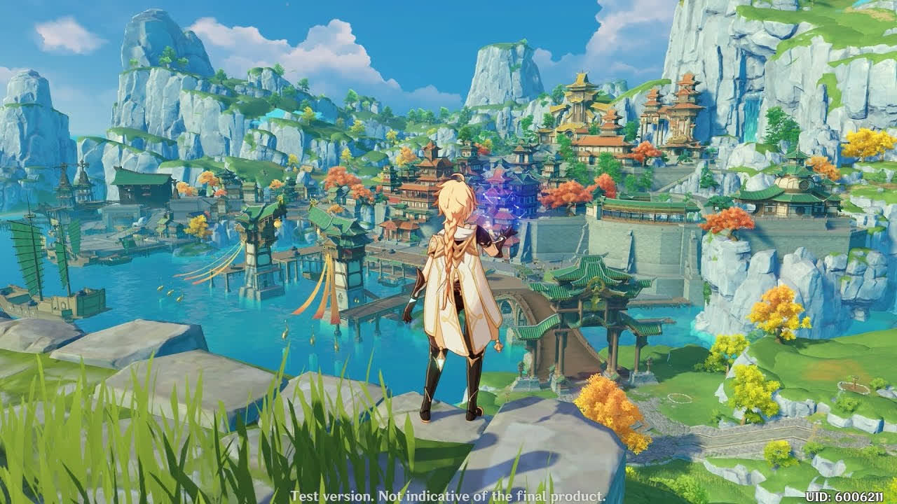
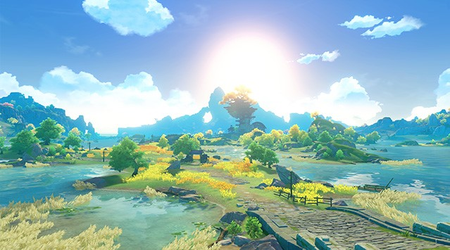

Лі Юе
Багате портове місто, розташоване у східній частині континенту Тейват. Ландшафт Лі Юе формують гордо скелясті гори і кам'яні ліси, великі рівнини і жваві узбережжя. Клімат цих земель цілий рік переливається строкатими квітами та фарбами. Крім кам'яно-скелястих чудес Лі Юе, місцеві жителі також насолоджуються щедрими дарами архонта землі у вигляді дорогоцінного каміння та мінералів.
Порт

Будівництво порту започаткувало морську торгівлю Лі Юе. Товарообіг цього найбільшого торгового вузла Тейвата не можна порівняти з іншими портами на континенті. Якщо будете в Лі Юе під час щорічного свята морських ліхтарів, у жодному разі не забудьте відвідати портовий район після заходу сонця. Більше ніде на континенті ви не зможете насолодитися таким захоплюючим видовищем тисячами ліхтарів, запущених у нічне небо.
Гори Тяньхен

Гірський масив на захід від Лі Юе протягом багатьох століть служить місту природним захистом від ворогів. Тут всюди зустрічаються руїни фортечних стін та оборонних споруд. Також у цьому місці вироблялася перша в Лі Юе видобуток руди.
Очеретяні острови
На північ від Лі Юе широко розкинулися чагарники, що дали назву цьому місцю. Заболочена місцевість зі своєю унікальною флорою і фауною приваблює повз мандрівників. Через очеретяні поля проходить важливий торговий шлях, тому тут нерідко можна зустріти купецькі каравани. Перепочити мандрівники зупиняються на заїжджому дворі «Ван Шу».
Деревня Цин Це

Між пагорбів та бамбукових лісів на північ від Лі Юе причаїлося крихітне село Цин Це. Долини, що потопають у хмарах, усіяні полями у формі півмісяця, якими пориви гірського вітру ганяють різнокольорові хвилі. Жителі села ведуть просте та невибагливе життя.
Захмарна межа

Скеляста місцевість на північний захід від Лі Юе, цілий рік вкрита хмарами та туманом. З цих вершин відкривається шикарний вигляд, але через складні маршрути та відсутність стежок, мало кому вдається їм насолодитися. Ходять чутки, що тут є притулок Адептів. Багато людей звертаються до них, сподіваючись знайти безсмертя. Цей прекрасний краєвид таїть безліч небезпек. Краще насолоджуватися чудовим краєвидом із заїжджого двору «Ван Шу».